============================================================================
This reference lists all "View" related functions in the API. View means classes and functions that are used to build custom GUIs; GUIs for your scripts in Renoise.
Please read the INTRODUCTION first to get an overview about the complete API, and scripting for Renoise in general...
For a small tutorial and more details about how to create and use views, have a look at the "com.renoise.ExampleToolGUI.xrnx" tool. This tool is included in the scripting dev started pack at http://scripting.renoise.com
Currently there are two ways to to create custom views:
Shows a modal dialog with a title, custom content and custom button labels:
renoise.app():show_custom_prompt(title, content_view, {button_labels} [,key_handler_func]) -> [pressed button]
(and) Shows a non modal dialog, a floating tool window, with custom content:
renoise.app():show_custom_dialog(title, content_view [, key_handler_func]) -> [dialog object]
key_handler_func is optional. When defined, it should point to a function with the signature noted below. "key" is a table with the fields:
key = {
name, -- name of the key, like 'esc' or 'a' - always valid
modifiers, -- modifier states. 'shift + control' - always valid
character, -- character representation of the key or nil
note, -- virtual keyboard piano key value (starting from 0) or nil
repeated, -- true when the key is soft repeated (hold down)
}
"dialog" is a reference to the dialog the keyhandler is running on.
function my_keyhandler_func(dialog, key) end
When no key handler is specified, the Escape key is used to close the dialog. For prompts, the first character of the button labels is used to invoke the corresponding button. When returning the passed key from the key-handler function, the key will be passed back to Renoise's key event chain, in order to allow processing global Renoise key-bindings from your dialog. This will not work for modal dialogs. This also only applies to global shortcuts in Renoise, because your dialog will steal the focus from all other Renoise views such as the Pattern Editor, etc.
==============================================================================
renoise.Views.View
View is the base class for all child views. All View properties can be applied to any of the following specialized views.
Dynamically create view hierarchies.
view:add_child(View child_view) view:remove_child(View child_view)
Set visible to false to hide a view (make it invisible without removing it). Please note that view.visible will also return false when any of its parents are invisible (when its implicitly invisible). By default a view is visible.
view.visible -> [boolean]
Get/set a view's size. All views must have a size > 0. By default > 0: How much exactly depends on the specialized view type.
Note: in nested view_builder notations you can also specify relative
sizes, like for example vb:text { width = "80%"}. The percentage values are
relative to the view's parent size and will automatically update on size
changes.
view.width -> [number] view.height -> [number]
Get/set a tooltip text that should be shown for this view. By default empty (no tip will be shown).
view.tooltip -> [string]
renoise.Views.Control (inherits from View)
Control is the base class for all views which let the user change a value or some "state" from the UI.
Instead of making a control invisible, you can also make it inactive. Deactivated controls will still be shown, and will still show their currently assigned values, but will not allow changes. Most controls will display as "grayed out" to visualize the deactivated state.
control.active -> [boolean]
When set, the control will be highlighted when Renoise's MIDI mapping dialog is open. When clicked, it selects the specified string as a MIDI mapping target action. This target acton can either be one of the globally available mappings in Renoise, or those that were created by the tool itself. Target strings are not verified. When they point to nothing, the mapped MIDI message will do nothing and no error is fired.
control.midi_mapping -> [string]
renoise.Views.Rack (inherits from View, 'column' or 'row' in ViewBuilder)
A Rack has no content on its own. It only stacks child views. Either vertically (ViewBuilder.column) or horizontally (ViewBuilder.row). It allows you to create view layouts.
DEPRECATED: Adding new child views to a rack automatically enlarges and shrinks the rack since API_VERSION 2.0. calling this function will have no effect.
rack:resize()
Set the "borders" of the rack (left, right, top and bottom inclusively) By default 0 (no borders).
rack.margin -> [number]
Setup the amount stacked child views are separated by (horizontally in rows, vertically in columns). By default 0 (no spacing).
rack.spacing -> [number]
Setup a background style for the rack. Available styles are:
By default "invisible".
rack.style -> [string]
When set to true, all child views in the rack are automatically resized to the max size of all child views (width in ViewBuilder.column, height in ViewBuilder.row). This can be useful to automatically align all sub columns/panels to the same size. Resizing is done automatically, as soon as a child view size changes or new children are added. By default disabled, false.
rack.uniform -> [boolean]
renoise.Views.Aligner (inherits from View, 'horizontal_aligner' or 'vertical_aligner' in ViewBuilder)
Just like a Rack, the Aligner shows no content on its own. It just aligns child views vertically or horizontally. As soon as children are added, the Aligner will expand itself to make sure that all children are visible (including spacing & margins). To make use of modes like "center", you manually have to setup a size that is bigger than the sum of the child sizes.
Setup "borders" for the aligner (left, right, top and bottom inclusively) By default 0 (no borders).
aligner.margin -> [number]
Setup the amount child views are separated by (horizontally in rows, vertically in columns). By default 0 (no spacing).
aligner.spacing -> [number]
Setup the alignment mode. Available mode are:
By default "left" for a horizontal_aligner, "top" for a vertical_aligner.
aligner.mode -> [string]
renoise.Views.Text (inherits from View, 'text' in ViewBuilder)
Shows a "static" text string. Static just means that its not linked, bound to some value and has no notifiers. The text can not be edited by the user. Nevertheless you can of course change the text at run-time with the "text" property.
See renoise.Views.TextField for texts that can be edited by the user.
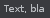
Get/set the text that should be displayed. Setting a new text will resize the view in order to make the text fully visible (expanding only). By default empty.
text.text -> [string]
Get/set the style that the text should be displayed with. Available font styles are:
"normal"
"big"
"bold
"italic"
"mono"
By default "normal".
text.font -> [string]
Setup the text's alignment. Applies only when the view's size is larger than the needed size to draw the text. Available mode are:
"left"
"right"
"center"
By default "left".
text.align -> [string]
renoise.Views.MultiLineText (inherits from View, 'multiline_text' in the builder)
Shows multiple lines of text, auto-formatting and auto-wrapping paragraphs into lines. Size is not automatically set. As soon as the text no longer fits into the view, a vertical scroll bar will be shown.
See renoise.Views.MultilineTextField for multiline texts that can be edited by the user.
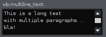
When a scroll bar is visible (needed), scroll the text to show the last line.
multiline_text:scroll_to_last_line()
When a scroll bar is visible, scroll the text to show the first line.
multiline_text:scroll_to_first_line()
Append text to the existing text. Newlines in the text will create new paragraphs, just like in the "text" property.
multiline_text:add_line(text)
Clear the whole text, same as multiline_text.text="".
multiline_text:clear()
Get/set the text that should be displayed on a single line. Newlines (Windows, Mac or Unix styled newlines) in the text can be used to create paragraphs. By default empty.
multiline_text.text -> [string]
Get/set an array (table) of text lines, instead of specifying a single text line with newline characters like "text" does. By default empty.
multiline_text.paragraphs -> [string]
Get/set the style that the text should be displayed with. Available font styles are:
"normal"
"big"
"bold
"italic"
"mono"
By default "normal".
multiline_text.font -> [string]
Setup the text view's background:
"body" -> simple text color with no background
"strong" -> stronger text color with no background
"border" -> text on a bordered background
By default "body".
multiline_text.style -> [string]
renoise.Views.TextField (inherits from View, 'textfield' in the builder)
Shows a text string that can be clicked and edited by the user.
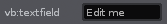
Add/remove value change (text change) notifiers.
textfield:add_notifier(function or {object, function} or {object, function}) textfield:remove_notifier(function or {object, function} or {object, function})
When false, text is displayed but can not be entered/modified by the user. By default true.
textfield.active -> [boolean]
The currently shown value / text. The text will not be updated when editing, rather only after editing is complete (return is pressed, or focus is lost). By default empty.
textfield.value -> [string]
Exactly the same as "value"; provided for consistency.
textfield.text -> [string]
Setup the text field's text alignment, when not editing. Valid values are:
"left"
"right"
"center"
By default "left".
textfield.align
True when the text field is focused. setting the edit_mode programatically will focus the text field or remove the focus (focus the dialog) accordingly. By default false.
textfield.edit_mode -> [boolean]
Valid in the construction table only: Set up a notifier for text changes. See add_notifier/remove_notifier below.
textfield.notifier -> [function()]
Valid in the construction table only: Bind the view's value to a renoise.Document.ObservableString object. Will change the Observable value as soon as the views value changes, and change the view's value as soon as the Observable's value changes - automatically keeps both values in sync. Notifiers can be added to either the view or the Observable object.
textfield.bind -> [ObservableString Object]
renoise.Views.MultilineTextField (inherits from View, 'multiline_textfield' in the builder)
Shows multiple text lines of text, auto-wrapping paragraphs into lines. The text can be edited by the user.
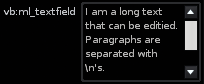
Add/remove value change (text change) notifiers.
multiline_textfield:add_notifier(function or {object, function} or {object, function}) multiline_textfield:remove_notifier(function or {object, function} or {object, function})
When a scroll bar is visible, scroll the text to show the last line.
multiline_textfield:scroll_to_last_line()
When a scroll bar is visible, scroll the text to show the first line.
multiline_textfield:scroll_to_first_line()
Append a new text to the existing text. Newline characters in the string will create new paragraphs, othwerise a single paragraph is appended.
multiline_textfield:add_line(text)
Clear the whole text.
multiline_textfield:clear()
When false, text is displayed but can not be entered/modified by the user. By default true.
multiline_textfield.active -> [boolean]
The current text as a single line, uses newline characters to specify paragraphs. By default empty.
multiline_textfield.value -> [string]
Exactly the same as "value"; provided for consistency.
multiline_textfield.text -> [string]
Get/set a list/table of text lines instead of specifying the newlines as characters. By default empty.
multiline_textfield.paragraphs -> [string]
Get/set the style that the text should be displayed with. Available font styles are:
"normal"
"big"
"bold"
"italic"
"mono"
By default "normal".
multiline_textfield.font -> [string]
Setup the text view's background style.
"body" -> simple body text color with no background
"strong" -> stronger body text color with no background
"border" -> text on a bordered background
By default "border".
multiline_textfield.style -> [string]
Valid in the construction table only: Set up a notifier for text changes. See add_notifier/remove_notifier above.
multiline_textfield.notifier -> [function()]
Valid in the construction table only: Bind the view's value to a renoise.Document.ObservableStringList object. Will change the Observable value as soon as the view's value changes, and change the view's value as soon as the Observable's value changes - automatically keeps both values in sync. Notifiers can be added to either the View or the Observable object.
multiline_textfield.bind -> [ObservableStringList Object]
True when the text field is focused. setting the edit_mode programatically will focus the text field or remove the focus (focus the dialog) accordingly. By default false.
multiline_textfield.edit_mode -> [boolean]
renoise.Views.Bitmap (inherits from Control, 'bitmap' in the builder)
Draws a bitmap, or a draws a bitmap which acts like a button (as soon as a notifier is specified). The notifier is called when clicking the mouse somewhere on the bitmap. When using a re-colorable style (see 'mode'), the bitmap is automatically recolored to match the current theme's colors. Mouse hover is also enabled when notifies are present, to show that the bitmap can be clicked.
Add/remove mouse click notifiers
bitmapview:add_notifier(function or {object, function} or {object, function}) bitmapview:remove_notifier(function or {object, function} or {object, function})
Setup how the bitmap should be drawn, recolored. Available modes are:
"plain" -> bitmap is drawn as is, no recoloring is done
"transparent" -> same as plain, but black pixels will be fully transparent
"button_color" -> recolor the bitmap, using the theme's button color
"body_color" -> same as 'button_back' but with body text/back color
"main_color" -> same as 'button_back' but with main text/back colors
By default "plain".
bitmapview.mode -> [string]
Bitmap name and path. You should use a relative path that uses Renoise's default resource folder as base (like "Icons/ArrowRight.bmp"). Or specify a file relative from your XRNX tool bundle: Lets say your tool is called "com.foo.MyTool.xrnx" and you pass "MyBitmap.bmp" as the name. Then the bitmap is loaded from "PATH_TO/com.foo.MyTool.xrnx/MyBitmap.bmp". Supported bitmap file formats are *.bmp, *.png or *.tif (no transparency).
bitmapview.bitmap -> [string]
Valid in the construction table only: Set up a click notifier. See add_notifier/remove_notifier above.
bitmapview.notifier -> [function()]
renoise.Views.Button (inherits from Control, 'button' in the builder)
A simple button that calls a custom notifier function when clicked. Supports text or bitmap labels.
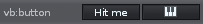
Add/remove button hit/release notifier functions. When a "pressed" notifier is set, the release notifier is guaranteed to be called as soon as the mouse is released, either over your button or anywhere else. When a "release" notifier is set, it is only called when the mouse button is pressed !and! released over your button.
button:add_pressed_notifier(function or {object, function} or {object, function}) button:add_released_notifier(function or {object, function} or {object, function}) button:remove_pressed_notifier(function or {object, function} or {object, function}) button:remove_released_notifier(function or {object, function} or {object, function})
The text label of the button By default empty.
button.text -> [string]
When set, existing text is cleared. You should use a relative path that either assumes Renoises default resource folder as base (like "Icons/ArrowRight.bmp"). Or specify a file relative from your XRNX tool bundle: Lets say your tool is called "com.foo.MyTool.xrnx" and you pass "MyBitmap.bmp" as name. Then the bitmap is loaded from "PATH_TO/com.foo.MyTool.xrnx/MyBitmap.bmp". The only supported bitmap format is ".bmp" (Windows bitmap) right now. Colors will be overridden by the theme colors, using black as transparent color, white is the full theme color. All colors in between are mapped according to their gray value.
button.bitmap -> [string]
Table of RGB values like {0xff,0xff,0xff} -> white. When set, the unpressed button's background will be drawn in the specified color. A text color is automatically selected to make sure its always visible. Set color {0,0,0} to enable the theme colors for the button again.
button.color -> [table with 3 numbers (0-255)]
Valid in the construction table only: set up a click notifier.
button.pressed -> [function()]
Valid in the construction table only: set up a click release notifier.
button.released -> [function()]
synonymous for 'button.released'.
button.notifier -> [function()]
renoise.Views.CheckBox (inherits from Control, 'checkbox' in the builder)
A single button with a checkbox bitmap, which can be used to toggle something on/off.
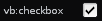
Add/remove value notifiers
checkbox:add_notifier(function or {object, function} or {object, function}) checkbox:remove_notifier(function or {object, function} or {object, function})
The current state of the checkbox, expressed as boolean. By default "false".
checkbox.value -> [boolean]
Valid in the construction table only: Set up a value notifier.
checkbox.notifier -> [function(boolean_value)]
Valid in the construction table only: Bind the view's value to a renoise.Document.ObservableBoolean object. Will change the Observable value as soon as the views value changes, and change the view's value as soon as the Observable's value changes - automatically keeps both values in sync. Notifiers can be added to either the view or the Observable object.
checkbox.bind -> [ObservableBoolean Object]
renoise.Views.Switch (inherits from Control, 'switch' in the builder)
A set of horizontally aligned buttons, where only one button can be enabled at the same time. Select one of multiple choices, indices.
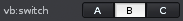
Add/remove index change notifiers.
switch:add_notifier(function or {object, function} or {object, function}) switch:remove_notifier(function or {object, function} or {object, function})
Get/set the currently shown button labels. Item list size must be >= 2.
switch.items -> [list of strings]
Get/set the currently pressed button index.
switch.value -> [number]
Valid in the construction table only: Set up a value notifier.
switch.notifier -> [function(index)]
Valid in the construction table only: Bind the view's value to a renoise.Document.ObservableNumber object. Will change the Observable value as soon as the views value changes, and change the view's value as soon as the Observable's value changes - automatically keeps both values in sync. Notifiers can be added to either the view or the Observable object.
switch.bind -> [ObservableNumber Object]
renoise.Views.Popup (inherits from Control, 'popup' in the builder)
A drop-down menu which shows the currently selected value when closed. When clicked, it pops up a list of all available items.
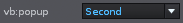
Add/remove index change notifiers.
popup:add_notifier(function or {object, function} or {object, function}) popup:remove_notifier(function or {object, function} or {object, function})
Get/set the currently shown items. Item list can be empty, then "None" is displayed and the value won't change.
popup.items -> [list of strings]
Get/set the currently selected item index.
popup.value -> [number]
Valid in the construction table only: Set up a value notifier.
popup.notifier -> [function(index)]
Valid in the construction table only: Bind the view's value to a renoise.Document.ObservableNumber object. Will change the Observable value as soon as the views value changes, and change the view's value as soon as the Observable's value changes - automatically keeps both values in sync. Notifiers can be added to either the view or the Observable object.
popup.bind -> [ObservableNumber Object]
renoise.Views.Chooser (inherits from Control, 'chooser' in the builder)
A radio button like set of vertically stacked items. Only one value can be selected at a time.
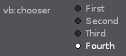
Add/remove index change notifiers.
chooser:add_notifier(function or {object, function} or {object, function}) chooser:remove_notifier(function or {object, function} or {object, function})
Get/set the currently shown items. Item list size must be >= 2.
chooser.items -> [list of strings]
Get/set the currently selected items index.
chooser.value -> [number]
Valid in the construction table only: Set up a value notifier.
chooser.notifier -> [function(index)]
Valid in the construction table only: Bind the view's value to a renoise.Document.ObservableNumber object. Will change the Observable value as soon as the views value changes, and change the view's value as soon as the Observable's value changes - automatically keeps both values in sync. Notifiers can be added to either the view or the Observable object.
chooser.bind -> [ObservableNumber Object]
renoise.Views.ValueBox (inherits from Control, 'valuebox' in the builder)
A box with arrow buttons and a text field that can be edited by the user. Allows showing and editing natural numbers in a custom range.
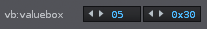
Add/remove value change notifiers.
valuebox:add_notifier(function or {object, function} or {object, function}) valuebox:remove_notifier(function or {object, function} or {object, function})
Get/set the min/max values that are expected, allowed. By default 0 and 100.
valuebox.min -> [number] valuebox.max -> [number]
Get/set the current value
valuebox.value -> [number]
Valid in the construction table only: Setup custom rules on how the number should be displayed. Both 'tostring' and 'tonumber' must be set, or neither. If none are set, a default string/number conversion is done, which simply reads/writes the number as integer value.
When defined, 'tostring' must be a function with one parameter, the conversion procedure, and must return a string or nil. 'tonumber' must be a function with one parameter, also the conversion procedure, and return a a number or nil. When returning nil, no conversion is done and the value is not changed.
Note: when any of the callbacks fail with an error, both will be disabled to avoid a flood of error messages.
valuebox.tostring -> (function(number) -> [string]) valuebox.tonumber -> (function(string) -> [number])
Valid in the construction table only: Set up a value notifier.
valuebox.notifier -> [function(number)]
Valid in the construction table only: Bind the view's value to a renoise.Document.ObservableNumber object. Will change the Observable value as soon as the views value changes, and change the view's value as soon as the Observable's value changes - automatically keeps both values in sync. Notifiers can be added to either the view or the Observable object.
valuebox.bind -> [ObservableNumber Object]
renoise.Views.Value (inherits from View, 'value' in the builder)
A static text view. Shows a string representation of a number and allows custom "number to string" conversion. See 'Views.ValueField' for a value text field that can be edited by the user.
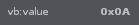
Add/remove value change notifiers.
value:add_notifier(function or {object, function} or {object, function}) value:remove_notifier(function or {object, function} or {object, function})
Get/set the current value.
value.value -> [number]
Get/set the style that the text should be displayed with. Available font styles are:
"normal"
"big"
"bold"
"italic"
"mono"
By default "normal".
value.font -> [string]
Setup the value's text alignment. Valid values are:
"left"
"right"
"center"
By default "left".
value.align -> [string]
Valid in the construction table only: Setup a custom rule on how the number should be displayed. When defined, 'tostring' must be a function with one parameter, the conversion procedure, and must return a string or nil.
Note: When the callback fails with an error, it will be disabled to avoid a flood of error messages.
value.tostring -> (function(number) -> [string])
Valid in the construction table only: Set up a value notifier.
value.notifier -> [function(number)]
Valid in the construction table only: Bind the views value to a renoise.Document.ObservableNumber object. Will change the Observable value as soon as the views value changes, and change the view's value as soon as the Observable's value changes - automatically keeps both values in sync. Notifiers can be added to either the view or the Observable object.
value.bind -> [ObservableNumber Object]
renoise.Views.ValueField (inherits from Control, 'valuefield' in the builder)
A text view, which shows a string representation of a number and allows custom "number to string" conversion. The value's text can be edited by the user.
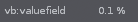
Add/remove value change notifiers.
valuefield:add_notifier(function or {object, function} or {object, function}) valuefield:remove_notifier(function or {object, function} or {object, function})
Get/set the min/max values that are expected, allowed. By default 0.0 and 1.0.
valuefield.min -> [number] valuefield.max -> [number]
Get/set the current value.
valuefield.value -> [number]
Setup the text alignment. Valid values are:
"left"
"right"
"center"
By default "left".
valuefield.align -> [string]
Valid in the construction table only: setup custom rules on how the number should be displayed. Both, 'tostring' and 'tonumber' must be set, or none of them. If none are set, a default string/number conversion is done, which simply shows the number with 3 digits after the decimal point.
When defined, 'tostring' must be a function with one parameter, the to be converted number, and must return a string or nil. 'tonumber' must be a function with one parameter and gets the to be converted string passed, returning a a number or nil. When returning nil, no conversion will be done and the value is not changed.
Note: when any of the callbacks fail with an error, both will be disabled to avoid a flood of error messages.
valuefield.tostring -> (function(number) -> [string]) valuefield.tonumber -> (function(string) -> [number])
Valid in the construction table only: Set up a value notifier function.
valuefield.notifier -> [function(number)]
Valid in the construction table only: Bind the view's value to a renoise.Document.ObservableNumber object. Will change the Observable value as soon as the views value changes, and change the view's value as soon as the Observable's value changes - automatically keeps both values in sync. Notifiers can be added to either the view or the Observable object.
valuefield.bind -> [ObservableNumber Object]
renoise.Views.Slider (inherits from Control, 'slider' in the builder)
A slider with arrow buttons, which shows and allows editing of values in a custom range. A slider can be horizontal or vertical; will flip its orientation according to the set width and height. By default horizontal.
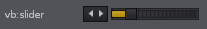
Add/remove value change notifiers.
slider:add_notifier(function or {object, function} or {object, function}) slider:remove_notifier(function or {object, function} or {object, function})
Get/set the min/max values that are expected, allowed. By default 0.0 and 1.0.
slider.min -> [number] slider.max -> [number]
Get/set the current value.
slider.value -> [number]
Valid in the construction table only: Set up a value notifier function.
slider.notifier -> [function(number)]
Valid in the construction table only: Bind the view's value to a renoise.Document.ObservableNumber object. Will change the Observable value as soon as the views value changes, and change the view's value as soon as the Observable's value changes - automatically keeps both values in sync. Notifiers can be added to either the view or the Observable object.
slider.bind -> [ObservableNumber Object]
renoise.Views.MiniSlider (inherits from Control, 'minislider' in the builder)
Same as a slider, but without arrow buttons and a really tiny height. Just like the slider, a mini slider can be horizontal or vertical. It will flip its orientation according to the set width and height. By default horizontal.
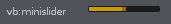
Add/remove value change notifiers.
slider:add_notifier(function or {object, function} or {object, function}) slider:remove_notifier(function or {object, function} or {object, function})
Get/set the min/max values that are expected, allowed. By default 0.0 and 1.0.
slider.min -> [number] slider.max -> [number]
Get/set the current value.
slider.value -> [number]
Valid in the construction table only: Set up a value notifier.
slider.notifier -> [function(number)]
Valid in the construction table only: Bind the view's value to a renoise.Document.ObservableNumber object. Will change the Observable value as soon as the views value changes, and change the view's value as soon as the Observable's value changes - automatically keeps both values in sync. Notifiers can be added to either the view or the Observable object.
slider.bind -> [ObservableNumber Object]
renoise.Views.RotaryEncoder (inherits from Control, 'rotary' in the builder)
A slider which looks like a potentiometer. Note: when changing the size, the minimum of either width or height will be used to draw and control the rotary, therefor you should always set both equally when possible.
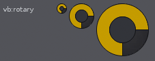
Add/remove value change notifiers.
rotary:add_notifier(function or {object, function} or {object, function}) rotary:remove_notifier(function or {object, function} or {object, function})
Get/set the min/max values that are expected, allowed. By default 0.0 and 1.0.
rotary.min -> [number] rotary.max -> [number]
Get/set the current value.
rotary.value -> [number]
Valid in the construction table only: Set up a value notifier function.
rotary.notifier -> [function(number)]
Valid in the construction table only: Bind the view's value to a renoise.Document.ObservableNumber object. Will change the Observable value as soon as the view's value changes, and change the view's value as soon as the Observable's value changes - automatically keeps both values in sync. Notifiers can be added to either the view or the Observable object.
rotary.bind -> [ObservableNumber Object]
renoise.Views.XYPad (inherits from Control, 'xypad' in the builder)
A slider like pad which allows for controlling two values at once. By default it freely moves the XY values, but it can also be configured to snap back to a predefined value when releasing the mouse button.
All values, notifiers, current value or min/max properties will act just
like a slider or a rotary's properties, but nstead of a single number, a
table with the fields {x = xvalue, y = yvalue} is expected, returned.
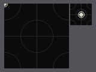
Add/remove value change notifiers.
xypad:add_notifier(function or {object, function} or {object, function}) xypad:remove_notifier(function or {object, function} or {object, function})
Get/set a table of allowed min/max values. By default 0.0 and 1.0 for both, x and y.
xypad.min -> [{x=Number,y=Number}] xypad.max -> [{x=Number,y=Number}]
Get/set the pad's current value in a table.
xypad.value -> [{x=Number,y=Number}]
When snapback is enabled an XY table is returned, else nil. To enable snapback, pass an XY table with desired values. Pass nil or an empty table to disable snapback. When snapback is enabled, the pad will revert its values to the specified snapback values as soon as the mouse button is released in the pad. When disabled, releasing the mouse button will not change the value.
xypad.snapback -> [{x=Number,y=Number}]
Valid in the construction table only: Set up a value notifier function.
xypad.notifier -> [function(value={x=Number,y=Number})]
Valid in the construction table only: Bind the view's value to a pair of renoise.Document.ObservableNumber objects. Will change the Observable values as soon as the views value changes, and change the view's values as soon as the Observable's value changes - automatically keeps both values in sync. Notifiers can be added to either the view or the Observable object. Just like in the other XYPad properties, a table with the fields X and Y is expected here and not a single value. So you have to bind two ObservableNumber object to the pad.
xypad.bind -> [{x=ObservableNumber Object, y=ObservableNumber Object}]
==============================================================================
Dialogs can not created with the viewbuilder, but only by the application. See "create custom views" on top of this file how to do so.
Bring an already visible dialog to front and make it the key window.
dialog:show()
Close a visible dialog.
dialog:close()
Check if a dialog is alive and visible.
dialog.visible -> [read-only, boolean]
==============================================================================
Class which is used to construct new views. All view properties, as listed above, can optionally be in-lined in a passed construction table:
local vb = renoise.ViewBuilder() -- create a new ViewBuilder vb:button { text = "ButtonText" } -- is the same as my_button = vb:button(); my_button.text = "ButtonText"
Besides the listed class properties, you can also specify the following "extra" properties in the passed table:
id = "SomeString": Can be use to resolve the view later on, e.g.
vb.views.SomeString or vb.views["SomeString"]
notifier = some_function or notifier = {some_obj, some_function} to register value change notifiers in controls (views which represent values)
bind = a_document_value (Observable) to bind a view's value directly to an Observable object. Notifiers can be added to the Observable or the view. After binding a value to a view, the view will automatically update its value as soon as the Observable's value changes, and the Observable's value will automatically be updated as soon as the view's value changes. See "Renoise.Document.API.lua" for more general info about Documents & Observables.
Nested child views: Add a child view to the currently specified view. For example:
vb:column { margin = 1, vb:text { text = "Text1" }, vb:text { text = "Text1" } }
Creates a column view with margin = 1 and adds two text views to the column.
Default sizes for views and view layouts. Should be used instead of magic numbers, also useful to inherit global changes from the main app.
renoise.ViewBuilder.DEFAULT_CONTROL_MARGIN renoise.ViewBuilder.DEFAULT_CONTROL_SPACING renoise.ViewBuilder.DEFAULT_CONTROL_HEIGHT renoise.ViewBuilder.DEFAULT_MINI_CONTROL_HEIGHT renoise.ViewBuilder.DEFAULT_DIALOG_MARGIN renoise.ViewBuilder.DEFAULT_DIALOG_SPACING renoise.ViewBuilder.DEFAULT_DIALOG_BUTTON_HEIGHT
Column, row.
vb:column { Rack Properties and/or child views } -> [Rack object] vb:row { Rack Properties and/or child views } -> [Rack object]
Aligners.
vb:horizontal_aligner { Aligner Properties and/or child views } -> [Aligner object] vb:vertical_aligner { Aligner Properties and/or child views } -> [Aligner object]
Space.
vb:space { View Properties and/or child views } -> [View object]
Text.
vb:text { Text Properties } -> [Text object] vb:multiline_text { MultiLineText Properties } -> [MultilineText object] vb:textfield { TextField Properties } -> [TextField object]
Bitmap.
vb:bitmap { Bitmap Properties } -> [Bitmap object]
Button.
vb:button { Button Properties } -> [Button object]
Checkbox, switch, popup, chooser.
vb:checkbox { Rack Properties } -> [CheckBox object] vb:switch { Switch Properties } -> [Switch object] vb:popup { Popup Properties } -> [Popup object] vb:chooser { Chooser Properties } -> [Chooser object]
Values.
vb:valuebox { ValueBox Properties } -> [ValueBox object] vb:value { Value Properties } -> [Value object] vb:valuefield { ValueField Properties } -> [ValueField object]
Sliders, rotary, XYPad.
vb:slider { Slider Properties } -> [Slider object] vb:minislider { MiniSlider Properties } -> [MiniSlider object] vb:rotary { RotaryEncoder Properties } -> [RotaryEncoder object] vb:xypad { XYPad Properties } -> [XYPad object]
View id is the table key, the table's value is the view's object.
e.g.: vb:text{ id="my_view", text="some_text"}
vb.views.my_view.visible = false (or)
vb.views["my_view"].visible = false
vb.views -> [table of views, which got registered via the "id" property]